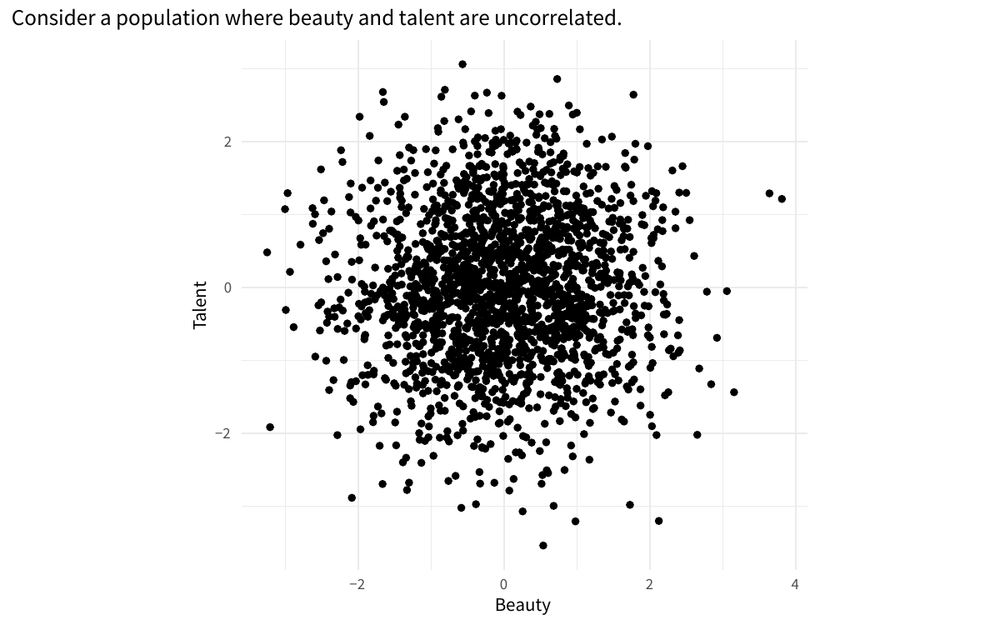

Below are some animations I created using gganimate to help me understand concepts in statistics. The work of 3Blue1Brown and Seeing Theory have been an inspiration for me.
Overfitting with Regression Splines
Regression splines are an effective tool for fitting curves to non-linear data. However, the flexibility of splines is both a blessing and a curse. If the degrees of freedom are set too high, splines can quickly overfit a dataset – resulting in good performance on the training data but poor performance on the testing data.
The below animation shows training data (top left) and test data (top right), with the true data generating function as the gray dashed line. We see that the best performance on the test set is obtained at about 5 degrees of freedom, while the training error goes to zero, a clear sign of overfitting.
Illustrating the bias-variance tradeoff with the KNN and Least-Squares classifiers
Comparing the least-squares classifier to the KNN classifier, fit on bootstrap resamples, demonstrates the bias-variance tradeoff. The black line is the true 0.5 probability contour, the red line is the estimated 0.5 probability contour. Data from Elements of Statistical Learning.
Example of link function misspecification in GLM for binary outcomes
Bayesian Inference for a Binomial Proportion
Bayesian inference can be using to quantity our uncertainty about the parameter \(p\) from a statistical model where the data is distributed \(\text{Bin}(n,p)\). An example is the bias of a coin. In the below example, the true bias is \(p = 0.7\). As the data come in, we can update our posterior distribution for \(p\).
k-Nearest Neighbors Decision Boundary
k-Nearest Neighbors is a non-parametric classification algorithm that classifies each point to the majority class of the \(k\) nearest points. The number of neighbors to use greatly affects the decision boundaries, as shown in the below animation.
Simple MCMC Animation
Bayesian Linear Regression
Bayesian inference can also be used in linear regression. As the data is collected, we become more confident about the parameters of the linear regression model:
- the slope of the linear relationship
- the variance of the error term
- the intercept of the linear relationship
The model was fit using Stan to do the MCMC sampling and the posterior distributions were plotted using a kernel density estimate.
Visualizing priors
When doing Bayesian inference, it’s important to visualize what your priors are implying. For a linear regression with only an intercept and slope, a N(0,1) prior on the slope produces very different regression lines (before using data) compared to a N(0,10) prior.
Calculating π with Monte Carlo Estimation
Monte Carlo estimation is a technique for solving deterministic problems by random sampling.
For example, you can compute π by uniform sampling within a square for \(x \in [-1,1], y \in [-1,1]\), and rejecting the points where \(x^2 + y^2 > 1\).
Then \(\pi = \text{(Proportion not rejected)} \times 4\).
Overfitting in Polynomial Regression
Overfitting is a major problem when fitting complex models to few data points. As a simple example, polynomial regression can fit noise in the data rather than the true model. Here the true model is quadratic with error that is normally distributed with mean zero. As the degree of the polynomial increases, the model rapidly overfits the data. At the extreme, if the degree of the polynomial is greater than (Number of points - 1), then the fitted polynomial will pass through every data point.
Finding the MLE estimate of the mean for a Normal Distribution
You can estimate the MLE for the mean of a normal distribution given a dataset by varying the mean until the peak of the log-likelihood is reached. This visually looks like sliding around different candidate distributions until the best match is found. Once the MLE for the mean is found, the variance can be varied in the same fashion (keeping the mean fixed at the MLE) to find the MLE for the variance.
Example of collider bias

Using Quantile-Quantile Plots to Detect Depatures from Normality
Quantile-quantile plots are a useful tool for assessing the fit of data to a given distribution. This animation shows Q-Q plots for t-distributed data with various degrees of freedom. We see that the Q-Q plot shows more clearly the departure from normality compared to the histogram.
The German Tank Problem
The German Tank problem is a famous problem in statistics. During World War 2, the Allied forces used the serial numbers on German tanks to estimate the number of tanks produced. The results of this statistical analysis estimated a production of 246 tanks per month, while intelligence from spies estimated a much higher rate of around 1.400 tanks per month. After the war, German records showed that the true rate was 245 per month! The statistical evidence that the numbers of tanks was lower than expected gave the Allies motivation to attack the Western Front, leading to the fall of Berlin and the end of the war in Europe.
We can formulate this problem assuming the serial numbers start at 1 and are randomly sampled from the population of tanks. Let \(X_1, X_2, \ldots X_n\) be a sample of \(n\) serial numbers. The maximum likelihood estimate for the total number of serial numbers is \(X_{(n)}\), the maximum of the observed serial numbers. However, this is a biased estimator – it underestimates the true number of tanks.
We can improve this estimator by adding a factor to our maximum likelihood estimator to make it unbiased – the number of known missing tank serial numbers divided by the sample size, which can be thought of as the average gap between the recorded serial numbers. Thus the new estimator is \[ \hat{\theta}=x_{(n)}+\frac{x_{(n)}-n}{n} = \left(1+\frac{1}{n}\right) x_{(n)}-1 \] which has the desired property of being unbiased. Simulating the performance of our estimators with a known population size of 2,000 tanks, we see that bias-corrected MLE has higher variance than the MLE but it achieves a lower mean squared error across the tested sample sizes due to being unbiased.
Comparing Estimators for Unif(0, θ)
The maximum likelihood estimator (MLE), while it has many nice statistics properties, isn’t always the best estimator. To estimate θ for Unif(0,θ), the MLE is the maximum of the data, which is biased low. It is an underestimate of the true value of θ. To correct the bias, we can multiply the maximum by \(\frac{n+1}{n}\) for an estimator that is unbiased, but has slightly higher variance. However, we see that the result is lower mean-squared error (MSE). We also show the method of moments estimator for reference, which is twice the sample mean.
Comparing Estimators for Center of Unif(0,1)
Estimators of central tendency can have very different properties. For Unif(0,1), the mean, median, and midrange (defined by \(\frac{\text{max} - \text{min}}{2}\)) are consistent estimators of the center, but the median has high variance and the midrange is biased.
Sampling Distribution of the Mean for the Gamma Distribution
As sample size increases, the sampling distribution of the mean
- decreases in variance
- approaches a normal distribution (central limit theorem)
- has expected value equal to population mean
For example, mean of N i.i.d samples from Gamma(a,b) is distributed Gamma(Na, Nb).